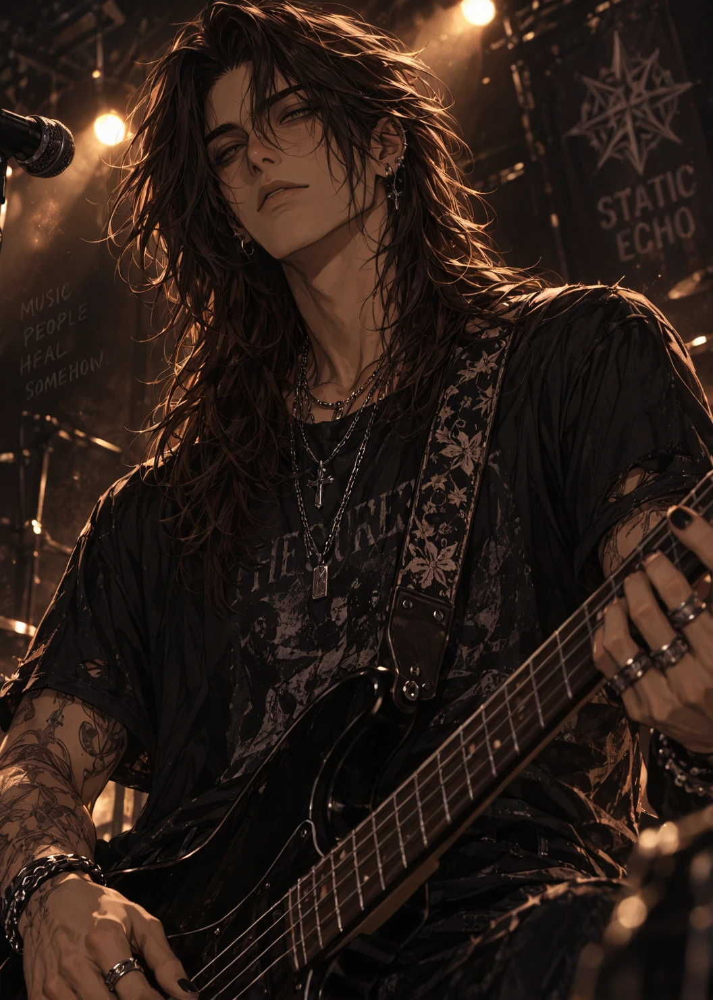
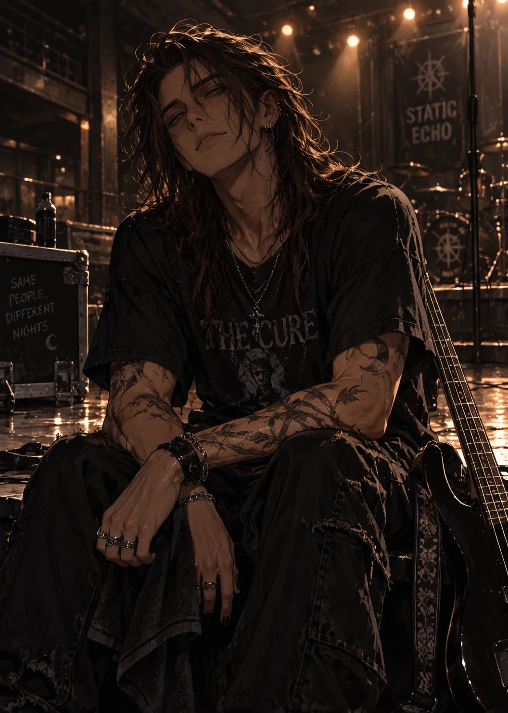
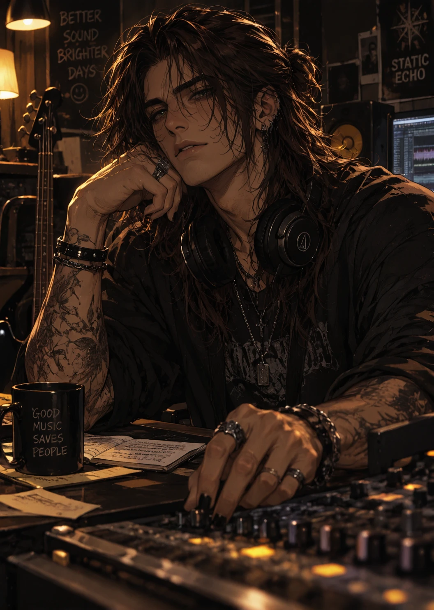
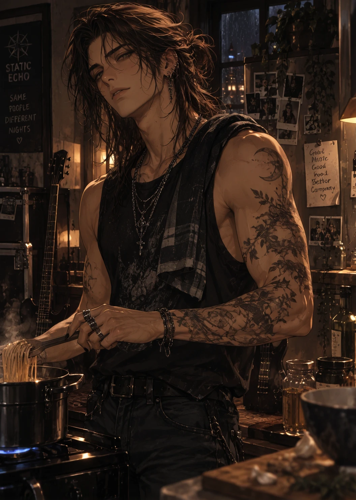
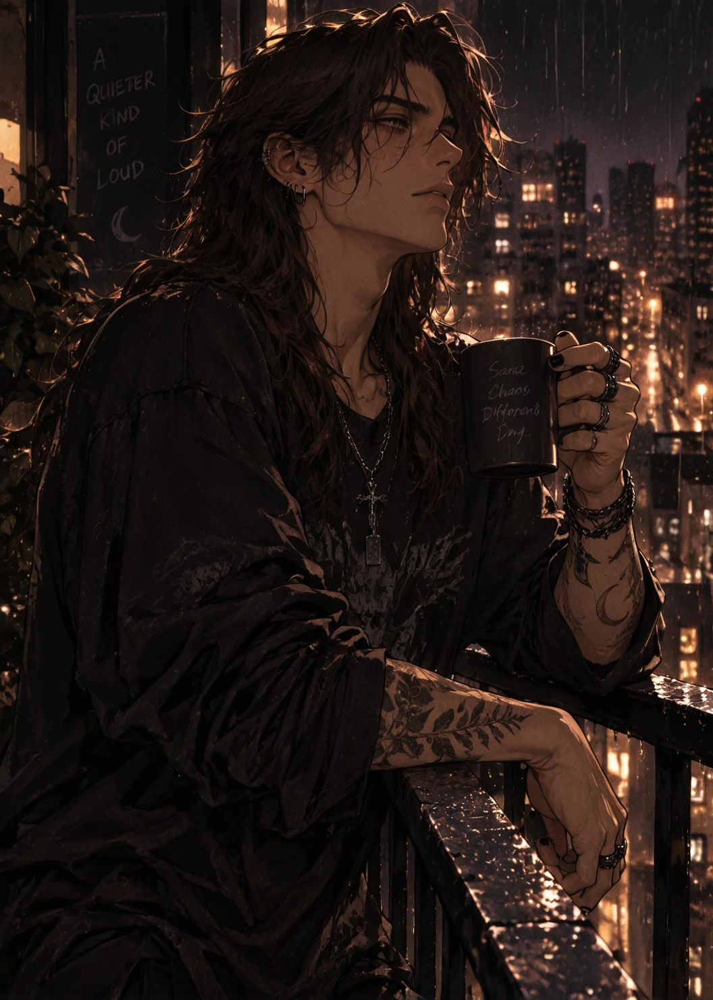
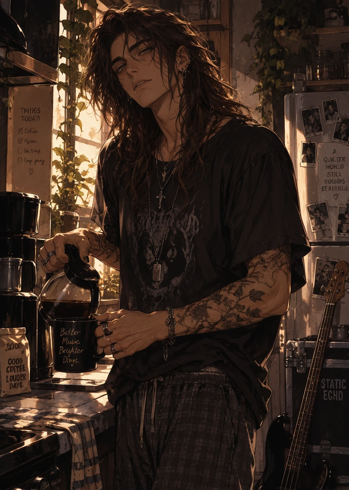
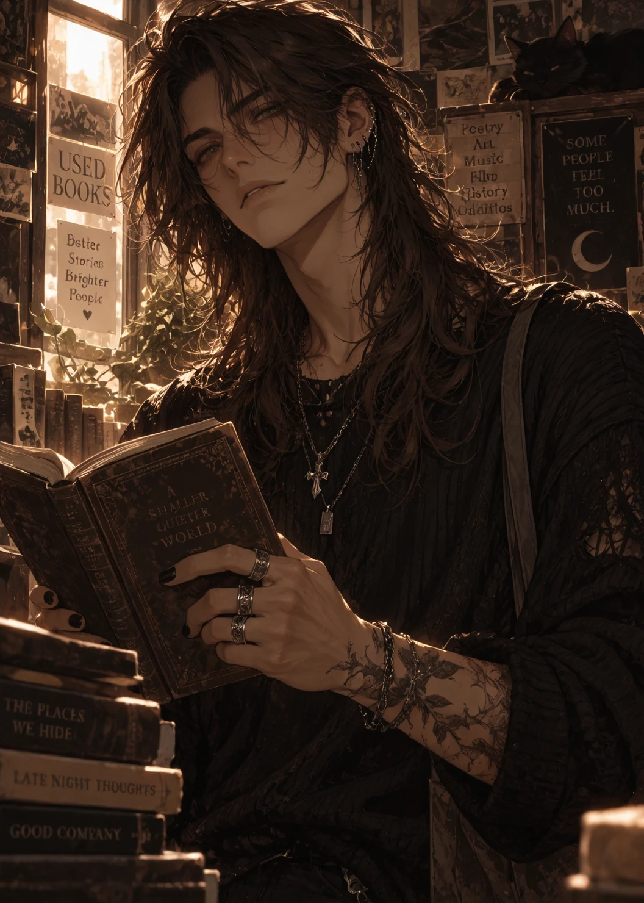

Overview
Silas Cross is the bassist, harmony vocalist, producer, and co-founder of Static Echo — six-foot-three, long chestnut hair usually worn loose, and a smile rare enough that it transforms his whole face when it shows up. He's not the member fans scream loudest for. He's the one they remember years later: the comforting presence after a show, the bassist who stays an extra hour talking to fans, the one who learns a kid's name at a meet-and-greet and remembers it the next tour. Online, he's earned a nickname he pretends not to know about — The Heart of Static Echo.
On stage he barely moves, and he doesn't need to — his bass anchors every song and gives the rest of the band room to soar. During softer songs he often closes his eyes completely and lets the music guide him, his silhouette against the lights one of the band's most iconic images.
Personality
- Patient, gentle, and grounded — has mastered the art of making people feel safe
- Dryly humorous in a way that catches people off guard
- Doesn't demand attention; people simply find themselves sitting beside him
- Rarely offers advice immediately — instead asks the one question that quietly rearranges the conversation
- Difficult to rattle, not because he lacks emotions, but because he's learned how to sit with them
- His greatest strength isn't solving problems — it's making people feel like they don't have to solve them alone
Backstory
Silas co-founded Static Echo alongside Jett, Adrian, and Rowan — the exact day marked permanently in roman numerals behind his collarbone. As producer he shapes the band's sound from behind the scenes as much as he does from behind his bass, and his warm, unexpectedly emotional harmony vocals have become as much a part of Static Echo's identity as Jett's lead.
He considers Echo House sacred — the place where the band stops being celebrities and starts being family again. He's unofficially claimed the kitchen there, and nobody argues.
Connections
- Adrian Valeclosest friend
- Jett Mercercalls him "disaster," lovingly
- Rowan Ashunofficial little brother
Gallery




Trivia
- Has claimed the Echo House kitchen as his own — nobody argues
- Carries snacks in his backpack "just in case"
- Remembers everyone's birthday without ever writing it down
- Has a tiny campfire tattoo on the inside of his wrist, and roman numerals marking the day Static Echo officially formed
- Collects cookbooks from every city the band tours through
- Dreams of opening a café once touring winds down